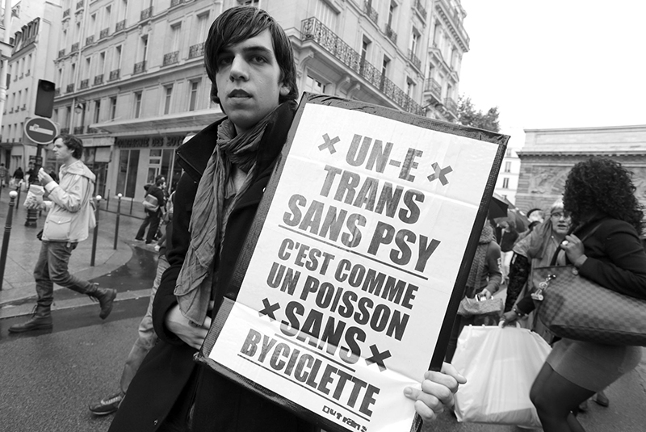

La SOFECT : Histoire d’une triste institution
La SoFECT, ou « Société française d’études et de prise en charge du transsexualisme », est une institution qui remonte loin. Aujourd’hui, sous le nom plus policé de « Société française d’études et de prise en charge de la transidentité », elle regroupe des médecins autodéclarés « spécialistes » des problématiques trans, et qui en vérité continuent à perpétuer des idées nocives et dangereuses sur les personnes trans, et à leur faire traverser de véritables épreuves dont tous ne sortent pas indemnes. Malheureusement, de nombreuses personnes trans continuent à ce jour de subir leur incompétence, parfois parce qu’ils ont été mal aiguillés au début de leur transition, parfois parce qu’ils n’ont pas vraiment le choix, la SoFECT étant la seule institution à ce jour à pouvoir promettre un remboursement à 100% du parcours. Cet article retrace l’histoire récente de la SoFECT, histoire édifiante quant à leur perception de la transidentité et leur dangerosité.
La première apparition d’une équipe dite « officielle » en France date de 1979, avec la constitution d’une équipe à Paris. Mais c’est la circulaire de juillet 1989 qui leur donne leur pouvoir : cette circulaire (illégale) interne au Ministère de la Santé déclare que seules les personnes trans passant par les équipes hospitalières « officielles » pourront être remboursées des frais relatifs à leur transition médicale. Cette circulaire est illégale car elle va à l’encontre de la liberté de tout individu de choisir le médecin auquel il fait appel. Elle est aussi secrète : elle ne sera révélée qu’en 2004, moment où elle sera également déclarée illégale par la Cour de Cassation. Il est aujourd’hui possible de faire une transition médicale en évitant la SoFECT et les équipes hospitalières, c’est ce qu’on appelle le parcours privé.
La SoFECT est officiellement créée en 2010, et regroupe sans vraiment le dire les équipes hospitalières déjà constituées et spécialistes autoproclamé·es des questions trans. Colette Chiland, psychiatre tristement célèbre pour sa transphobie, est présidente d’honneur de la SoFECT pendant des années. Elle écrit par exemple dans son livre « Changer de sexe » que les personnes trans souffrent d’un « problème narcissique », ou d’un « problème de transmission fantasmatique de désirs inconscients des parents ». Pour citer d’autres affirmations de Colette Chiland, reprises par un très bon article de Tom Reuter : « À un niveau plus profond, j’aurais du mal à considérer comme un homme celui qui ne serait pas – virtuellement – capable de me pénétrer, et je n’ai pas peur de me faire piéger dans ma vie privée par un transsexuel FM parce que le critère de surface en costume d’Adam est parlant. Il n’en va pas de même pour mes collègues hommes en face d’un transsexuel MF… ». Ou encore : « Il n’est pas question qu’un transsexuel mâle biologique soit féministe, il ne peut que se conformer de manière caricaturale aux stéréotypes sociaux pour se faire reconnaître comme femme (et vice versa). »
Pour en revenir aux activités mêmes de la SoFECT, en son temps de gloire, il fallait pour être autorisé à effectuer une transition médicale compter au moins 2 ans de suivi psychiatrique, passer un bilan psychologique avec notamment une « échelle de féminité/masculinité », et la décision de commencer une transition médicale devait être prise de façon collégiale par trois médecins.
La transition devra être complète à leurs yeux, c’est-à-dire hormones + toutes les opérations possibles. Tout patient sortant du parcours prédéfini devra recommencer à zéro pour pouvoir y re-rentrer (ou n’y sera pas autorisé).
Il faut par ailleurs , selon les protocoles, ne pas être marié.e, avoir plus de 23 ans, ne pas avoir d’enfant mineur, ne pas avoir le VIH ou l’hépatite C, être hétérosexuel·le dans « son genre d’arrivée après transition ». Parfois, on demande à la personne trans de passer un test de « vie réelle », c’est-à-dire de vivre en tant que son genre ressenti sans aucune transition médicale pendant une à plusieurs années – ce qui évidemment est très dangereux, en plus d’être cruel.
Il semblerait que les pratiques aient évoluées et ne soient plus aussi rigides. [Tout complément est d’ailleurs le bienvenu sur le sujet.] Cependant, des témoignage inquiétants font encore état de transphobie au sein des équipes hospitalières, de dosages inadaptés ou dangereux d’hormones, de désinformation concernant les effets d’une transition hormonale. Les délais imposés aux personnes subissant ces parcours hospitaliers demeurent par ailleur
Les villes concernées par la présence de la SoFECT à ce jour sont : Nice, Montpellier, Bordeaux, Lyon, Marseille, Paris, Brest.
Face à cette institution, le mieux reste encore si on en a les moyens de passer par un parcours privé, en choisissant soi-même ses médecins. Malheureusement, à l’heure actuelle, même le parcours privé peut être « parasité » par des exigences émanant de la SoFECT, grande spécialiste pour imposer une pression sur les praticiens indépendants afin qu’ils s’alignent avec ses pratiques. On peut donc parfois se retrouver dans une impasse, à moins d’avoir les moyens de se déplacer en France à la recherche de médecins respectueux. Si ce n’est pas votre cas, n’hésitez pas à créer des cagnottes (GoFundMe, Le Pot Commun, Leetchi...) qui pourront vous aider pour certaines étapes.
Originalement publié en 2018 par Alex Benjamin sur le blog En tous genre
Mise en forme par Max Lillo avec le caractère Adelphe d'Eugénie Bidaut